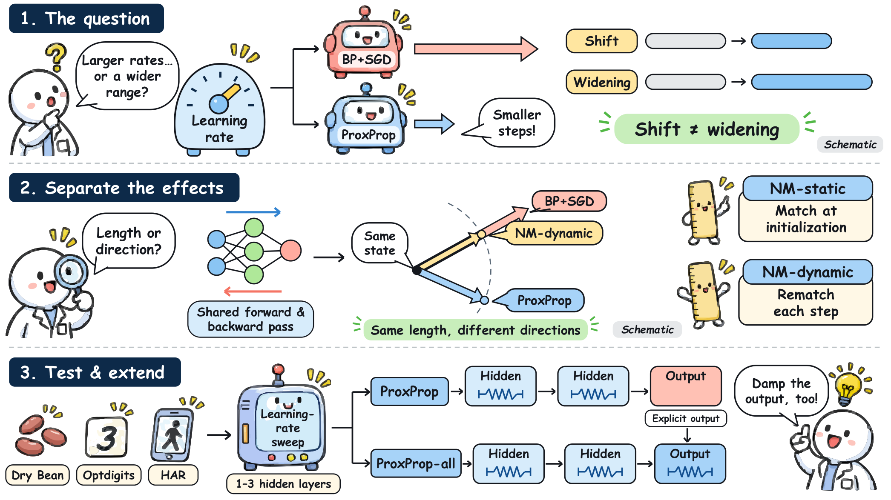
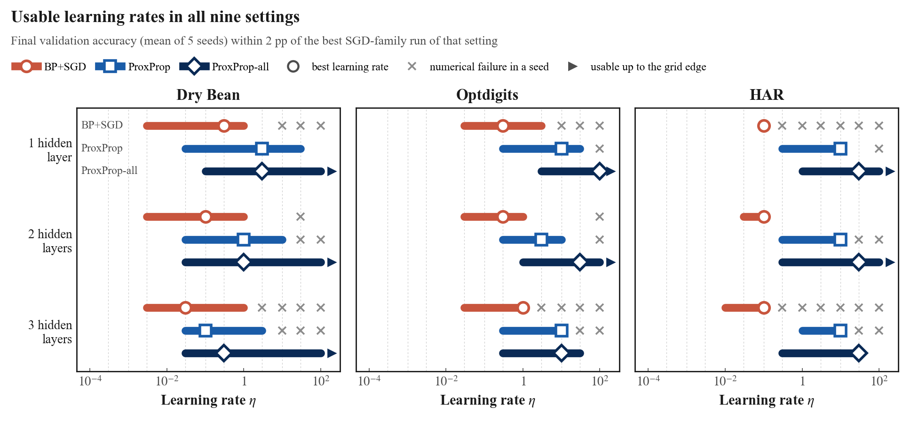
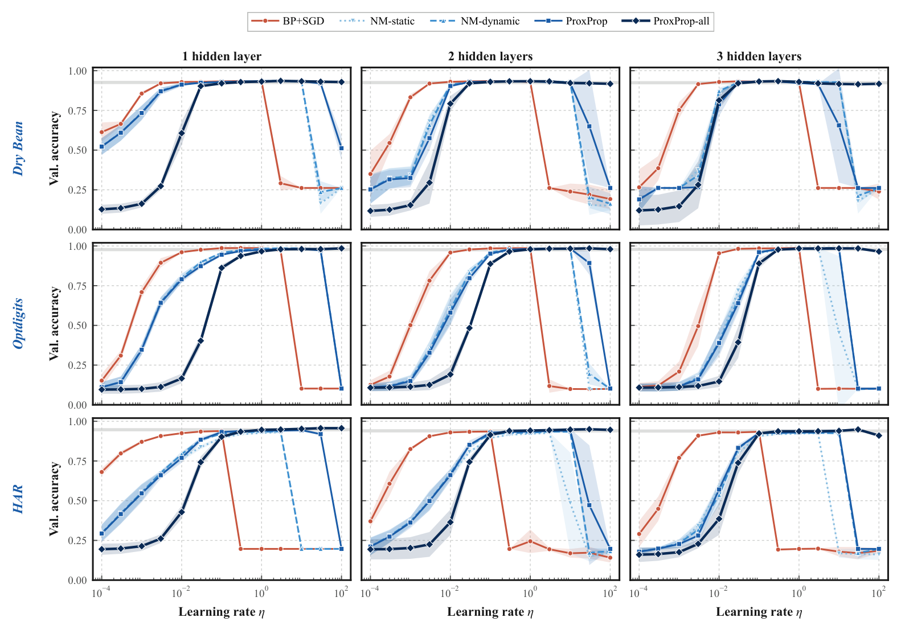
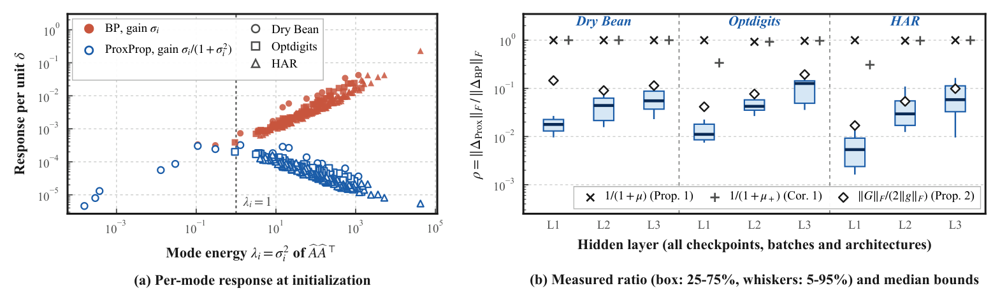

Study overview. We distinguish a shift in the usable learning-rate range from an increase in its width, and use norm-matched SGD controls to isolate the effect of the proximal update direction. We sweep learning rates on three datasets at depths of one to three hidden layers and test proximal damping of the output layer with ProxProp-all.
TL;DR
Mostly it moves it. The proximal step is provably smaller than backpropagation's gradient step, so the learning rates that train well shift up by half a decade to two decades, but the range gets wider in only 3 of 9 settings. Applying the proximal update to the output layer as well, the one layer our bound shows is left undamped, removes every numerical failure and widens the range in 8 of 9 settings.
how far ProxProp moves the usable learning-rate range up
settings in which ProxProp's range is wider than BP's
ProxProp-all: wider than BP, and no numerical failure in 585 runs
ProxProp-all's test-accuracy gain over BP+SGD on HAR (Holm-adjusted p < 0.05)
Interactive demo
Both panels use the runs and networks of the report. Nothing is sent to a server: the networks run in your browser.
Learning-rate explorer
Each point is the final validation accuracy of a 100-epoch run, averaged over 5 seeds (3,510 runs in total). Pick a dataset and a depth, then move the learning rate.
Input → model → output
Three networks with two hidden layers, trained on Optdigits by BP+SGD, ProxProp and ProxProp-all at the learning rate below (seed 0 of the sweep). Draw a digit, or pick one from the test split.
Input
Network input
Output
Method
All update rules share backpropagation's forward and backward pass. They differ only in how the gradient g of a layer becomes a weight change. For a layer with input batch  (with a row of ones for the bias):
The proximal step damps the directions in which the layer's input carries much energy. We prove that a change of the learning rate moves it by at most a data-dependent fraction of the gradient step, and check this bound on 1,260 layer-level records. ProxProp keeps the explicit step on the output layer; ProxProp-all applies the proximal step there too. Two SGD controls get ProxProp's step length with BP's direction, measured once at initialization (NM-static) or at every step (NM-dynamic).
Results

Usable learning rates. Each bar joins the learning rates at which a method trains well (final validation accuracy within 2 points of the best SGD-family run). ProxProp moves the bar to larger learning rates; ProxProp-all widens it and never fails numerically.

Learning-rate sweeps (mean ± std over 5 seeds). The gray band marks the usable region.
Test accuracy at the validation-selected learning rate
| Method | Dry Bean | Optdigits | HAR | ||||||
|---|---|---|---|---|---|---|---|---|---|
| 1 | 2 | 3 | 1 | 2 | 3 | 1 | 2 | 3 | |
| BP+SGD | 93.1 | 93.2 | 93.1 | 96.2 | 96.3 | 96.2 | 94.3 | 94.5 | 94.4 |
| ProxProp | 93.1 | 93.0 | 93.3 | 95.6 | 96.1 | 96.7 | 95.1 | 94.8 | 94.2 |
| ProxProp-all | 93.3 | 93.4 | 93.3 | 96.2 | 96.9† | 97.0 | 96.2† | 96.1† | 95.5† |
| NM-dynamic | 93.0 | 92.9 | 93.1 | 95.9 | 96.2 | 96.2 | 94.6 | 94.4 | 94.1 |
| NM-static | 93.0 | 92.9 | 93.0 | 95.6 | 96.0 | 96.0 | 94.3 | 94.0 | 93.9 |
| BP+Adam | 93.0 | 93.0 | 93.1 | 96.2 | 96.5 | 96.4 | 94.4 | 94.5 | 94.3 |
| Logistic regression | 92.0 | 95.2 | 95.2 | ||||||
Mean of 5 seeds, for 1, 2 and 3 hidden layers. †: better than BP+SGD after Holm correction (paired t-tests, 27 comparisons, p < 0.05).

Checking the bound. (a) BP's response to a learning-rate change grows with a mode's energy; the proximal step damps the strong modes. (b) Measured damping in every hidden layer against the median of each bound: none of the 1,260 checks violates a bound.